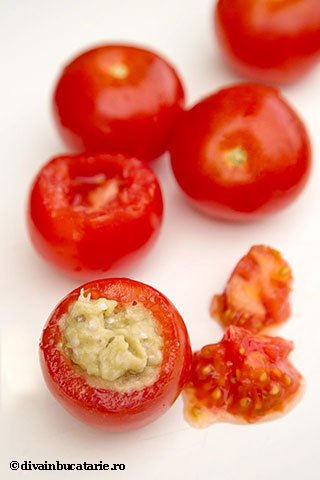

Rosii umplute cu salata de vinete

Descriere
Ingrediente
- 8 rosii de marime mica spre medie.
- 3 vinete medii-mari.
- O ceapa.
- 80-100 ml ulei.
- Optional - un galbenus.
Preparare
- Coacem vinetele: la gratar, pe flacara aragazului sau la cuptor.
- Presaram sare grunjoasa si le acoperim cu un prosop timp de 15-20 minute, pentru a se curata mai usor.
- Tocam vinetele, adaugam ceapa tocata fin, sare si ulei treptat.
- Optional, adaugam galbenusul si le frecam pana se albesc.
- Gustam si adaugam sare dupa gust.
- Spalam rosiile, le taiem capul si scobim interiorul.
- Le lasam la scurs cateva minute iar apoi le umplem cu salata de vinete.